Ph.D. in Computer Science
Kennesaw State University, Marietta, Georgia, USA
Passed Ph.D. Depth Exam, Spring 2024
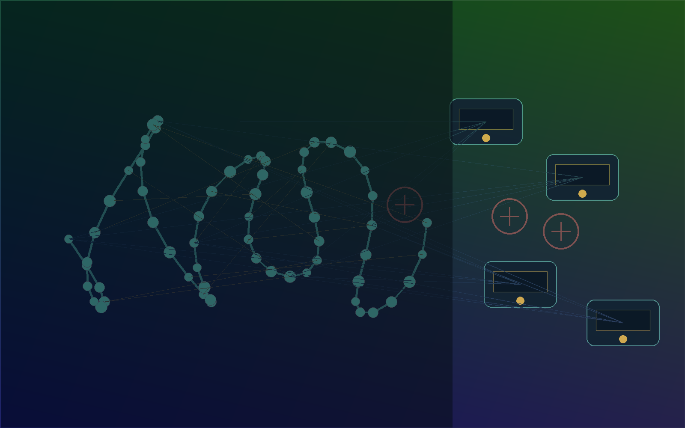
Ph.D. Researcher · Computer Science
I develop AI systems for molecular dynamics, protein-protein docking, multimodal edge vision, and data-driven scientific computing.
Research interests: Bioinformatics, Molecular Dynamics, Molecular Docking, LLMs, Computer Vision.
Education
Kennesaw State University, Marietta, Georgia, USA
Passed Ph.D. Depth Exam, Spring 2024
Jahangirnagar University, Dhaka, Bangladesh
Rajshahi University of Engineering and Technology (RUET)
Selected Research Output
Kazi Fahim Ahmad Nasif, Bobin Deng, Yixin Xie, Syed Md Shamsul Alam, Lingtao Chen, Nobel Dhar, Kun Suo, Dan Chia-Tien Lo.
View paper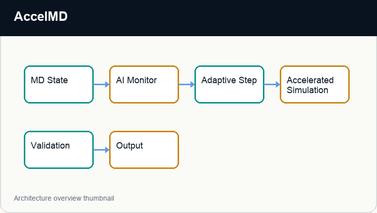
L. Chen, K. A. Nasif, M. Yang, S. Niu, B. Deng, Y. Xie.
View paper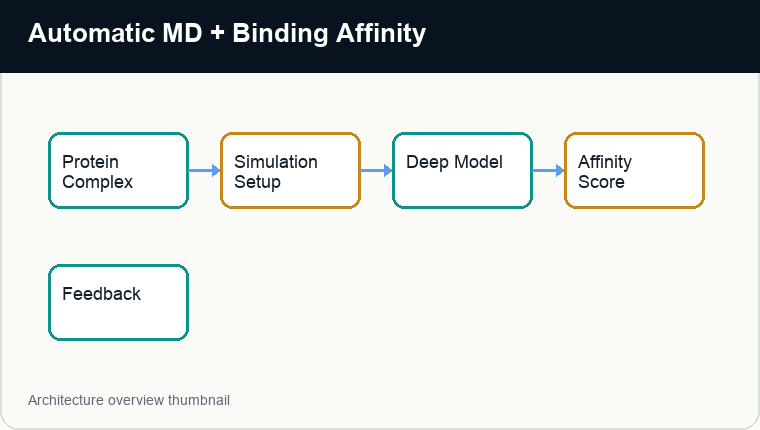
Z. Elghazzali, Y. Xie, C. Zhao, B. Deng, L. Chen, K. A. Nasif.
View paper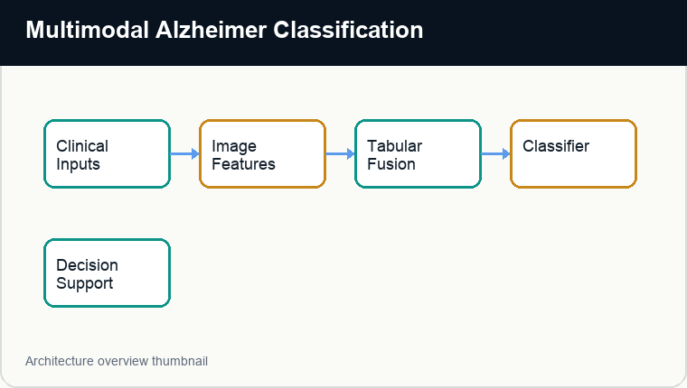
K. F. Ahmed Nasif, M. Nurul Absur and M. Al Mamun.
View paper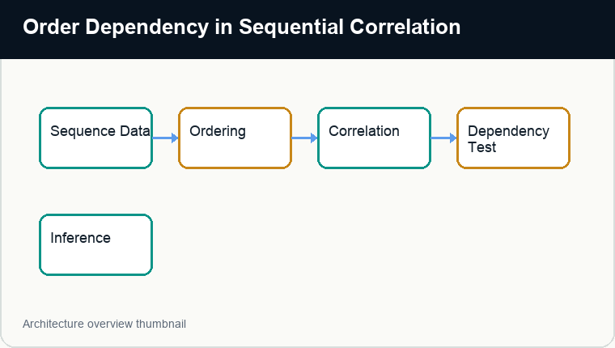
M. N. Absur, K. F. A. Nasif, S. Saha and S. N. Nova.
View paper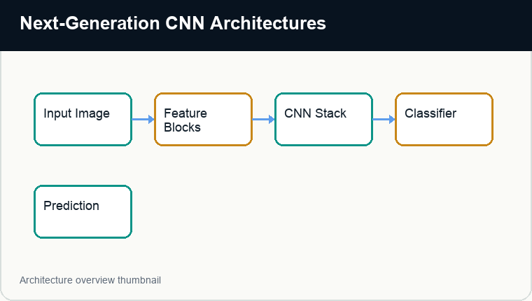
Chen, Lingtao, Qiaomu Li, Kazi Fahim Ahmad Nasif, Ying Xie, Bobin Deng, Shuteng Niu, Seyedamin Pouriyeh, Zhiyu Dai, Jiawei Chen, and Chloe Yixin Xie.
View paper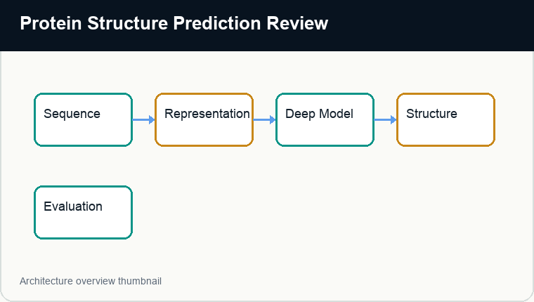
Md Nurul Absur, Sourya Saha, Sifat Nawrin Nova, Kazi Fahim Ahmad Nasif, Md Rahat Ul Nasib.
View paper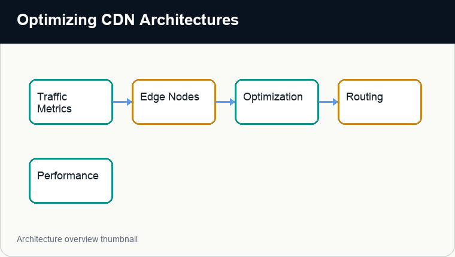
Nobel Dhar, Bobin Deng, Md Romyull Islam, Kazi Fahim Ahmad Nasif, Liang Zhao, Kun Suo.
View paper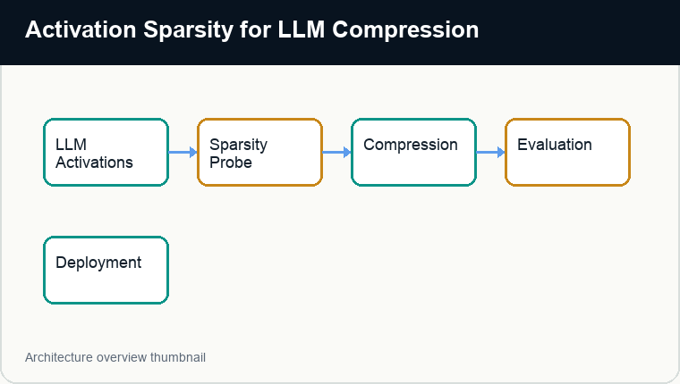
Lingtao Chen, Kazi Fahim Ahmad Nasif, Bobin Deng, Shuten Niu, Chloe Yixin Xie.
View paper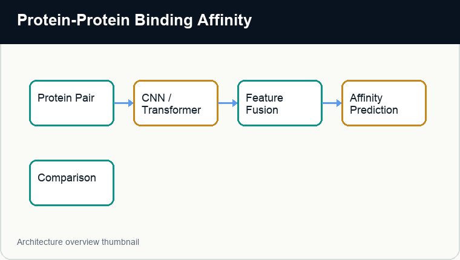
Bobin Deng, Kazi Fahim Ahmad Nasif, Nobel Dhar, Rahim Snow, George Harbison, Michael Parlotto. Provisional Patent Application, Registration No. 52494, Docket No. 62941.2834, InComm Payments.
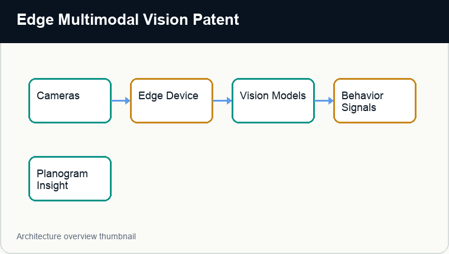
Experience
Graduate Research Assistant
Enhancing nonprofit IT infrastructure through scalable data systems, website analytics, customized AI tools, and secure information workflows.
Research Assistant
Researching edge multimodal vision for customer behavior analysis, including emotion detection, gaze estimation, product detection, and model compression.
Actuarial Analyst
Performed actuarial forecasting, risk analysis, product pricing support, business valuation, and rate-chart development for life insurance products.
Trainee Programmer
Customized LibreOffice Calc macros, improved reporting workflows, and provided documentation for tool adoption.
Academic Service
Peer Reviewer
Peer Reviewer
Peer Reviewer
Kennesaw State University, Georgia, USA
Kennesaw State University, Georgia, USA
Institute of Electrical and Electronics Engineers
Supported the ACMSE 2024 conference community.
Contact